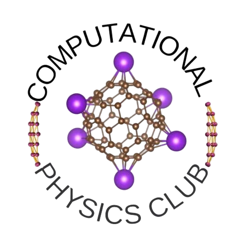
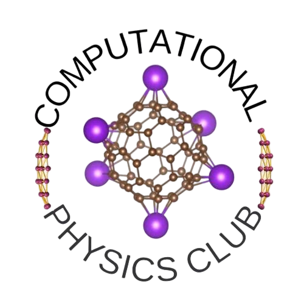

The Physics Without Frontiers (PWF) programme of the the Abdus Salam International Centre for Theoretical Physics (ICTP) and the United Nations Educational, Scientific and Cultural Organization (UNESCO), in collaboration with Grupo de Investigadores Latitud Cero, Universidad Yachay Tech, Universidad Internacional del Ecuador (UIDE) and Universidad de la Américas (UDLA), have the pleasure to invite students to participate in the EPIC + Dorothy Coding Challenge.
The EPIC + Dorothy Coding Challenge is a scientific programming contest aimed at motivating BSc and Master students in Ecuador to pursue careers that combine computer science with natural sciences (physics, in particular). Students who participate in this year's edition will have the opportunity to team up with a peer and together demonstrate their Python coding abilities to solve tricky problems related to scientific computing.

Dorothy Johnson Vaughan was an American mathematician and human computer who worked for the National Advisory Committee for Aeronautics (NACA), later NASA, at Langley Research Center in Hampton, Virginia. In 1949, she became acting supervisor of the West Area Computers, the first African-American woman to receive a promotion and supervise a group of staff at the center. She later was promoted officially to the position of supervisor. During her 28-year career, Vaughan prepared for the introduction of computers in the early 1960s by teaching herself and her staff the Fortran programming language. She later headed the programming section of the Analysis and Computation Division (ACD) at Langley.
There will be 2 remote application rounds:
1 April - 16 May
Application Deadline: 30 April
Stage 1 contest: 7 - 11 May
Publication of Stage 1 results: 16 - 18 May
17 May - 15 June
Stage 2 contest: 18 - 20 June
Publication of Stage 2 results: 30 June
1 July - 8 August
Stage 3 contest: 1 July - 8 August 2025
Publication of Stage 3 results: 8 August 2025
EPIC V: 4 - 8 August 2025
Participants will engage in immersive workshops focused on three cutting-edge themes:
Each day begins with a concise introductory lecture to establish core concepts, followed by interactive programming tutorials centered on data analysis and computational simulation techniques tailored to physics.
During the hackathon, participants will:
| Criteria | Insufficient (0 Points) | Fair (1 Point) | Good (2 Points) | Excellent (3 Points) |
|---|---|---|---|---|
| Correctness (30%) | Solution appears unrelated to the problem. | Solution might address the challenge with substantial modifications. | Solution appears to solve the problem. | Solution solves the problem and provides additional benefits. |
| Sophistication (30%) | Overly simplistic solution. | Minimally complex, addressing few constraints. | Moderately complex, addressing some constraints. | Successfully identifies and addresses key constraints. |
| Implementation (30%) | Not possible to implement. | Possible to implement with substantial modifications. | Possible to implement with minor modifications. | Readily implementable. |
| Coherence (10%) | Unorganized and unclear language. | Requires substantial revision. | Logically arranged, minimal revision needed. | Highly comprehensible, no revision needed. |
Registration is now open! We welcome applications from undergraduate and MSc students in natural or computer sciences who wish to expand their scientific computing skills. Preference will be given to applicants from Latin American countries and students who have not participated in previous editions of EPIC.
We are committed to reducing the gender gap in academia. Half of our scholarships will be allocated to female applicants. Female students are particularly encouraged to apply, and we will host a dedicated session on Women in STEM as part of EPIC 5.
To complete your registration, please click the button below:
Explore the detailed schedule for EPIC V below. Click on each day to expand and view the sessions.
The school will be held in person on the campus of Universidad Internacional del Ecuador (UIDE) from 4th to 8th August 2025. UIDE is located in the city of Quito, a place renowned for its pleasant weather conditions and its proximity to numerous tourist attractions, such as hot springs, lakes, mountains, and active and inactive volcanoes.
Universidad Internacional del Ecuador (UIDE)
Campus Quito, Av. Simón Bolívar y Av. Jorge Fernández
QUITO, ECUADOR
 

Learn from experts in the field of computational science who will guide you through EPIC V
Computational Biophysics & Machine Learning for Biology
Hernán Andrés Morales-Navarrete holds a PhD in computational Biology from the Max Planck Institute of Molecular Cell Biology.
Data Science & Image Analysis
Specializes in computing science and education.
Radio Astronomy & Astrophysics
Helga’s main scientific interest is how the gas content of galaxies influences their evolution.
Cybersecurity and Business Technology and Systems Management
Iván Reyes Chacón, MgTI, MCs, is a prominent leader in the academic and technological fields.
Cellular Image & Biomedical Image Analysis
I am a physicist with a deep passion for the medical sciences, driven by a longstanding fascination with the complexity of biological systems.
Computational Astrophysics
I am a computational astrophysicist working at the boundary between astrophysical gas dynamics and magnetohydrodynamics.
We welcome applications from undergraduate students and MSc students working on any field of natural sciences and/or computer sciences who wish to expand their scientific computing skills. While we review all applications, preference is given to applicants from Latin American countries and to students who have not participated in previous editions of EPIC.
Basic programming notions are essential to sign up for this workshop. Familiarity with Python is recommended as it will be the primary language used throughout the competition.
No, there is no registration fee for EPIC V. The event is fully funded by ICTP's Physics Without Frontiers (PWF) program and UNESCO-Quito.
The first two stages of the competition are conducted remotely. However, the final stage (EPIC V) will be held in person at Universidad Internacional del Ecuador (UIDE) in Quito.
Yes, participants must work in groups of 2. You can register with a partner or request to be matched with another participant.
The 5th edition of EPIC will focus on equipping participants with advanced skills in data analysis and computational simulations, emphasizing real-world applications in astrophysics, computational physics, and biological systems modeling. EPIC V introduces an innovative structure combining intensive hands-on workshops and a collaborative hackathon, creating an engaging and interactive learning experience.
During the first two days, participants will engage in workshops introducing fundamental techniques for data analysis, machine learning, and computational simulations, with the Python programming language as the primary tool. Each day will feature a single plenary lecture to provide a conceptual framework for the day’s focus area, followed by practical tutorials led by field experts.
The following three days will be dedicated to a hackathon “The Dorothy Coding Challenge”, where participants will collaborate on state-of-the-art scientific challenges inspired by the workshop topics. Teams will work under the mentorship of experts, aiming to produce outputs with the potential to form the basis of scientific manuscripts.
By the end of the program, participants will:
EPIC V aims to leave participants with not only enhanced technical skills but also a deeper understanding of how computational methods drive innovation in diverse scientific fields, inspiring them to apply these tools in their academic and professional pursuits.